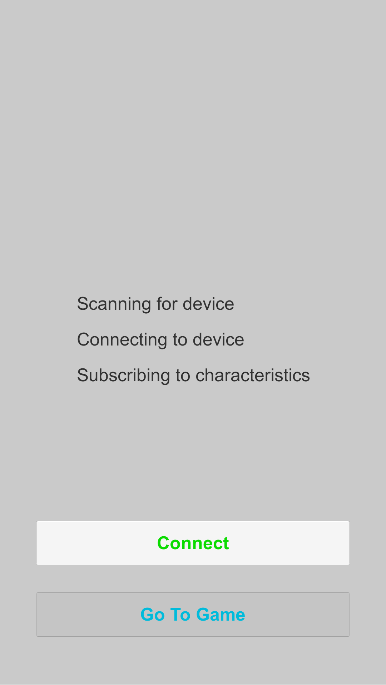

This page contains information about the Unity Framework in order to use an Android or iOS smartphone to act as a BLE central in order to read the advertised values of the sensor-controller.
Disclaimer: All development and testing has been done using the Unity Version 2018.3.12f1
Disclaimer: Our framework heavily relies on the work of SHATALMIC's BLE Unity asset plugin (Link). It is therefore mandatory to purchase this asset in advance in case you want to make changes on your own (Please support the author for his amazing work).
Software Components
| Component | Description | Link |
|---|---|---|
| GitHub Repo | Source code of Framework | https://github.com/dangpg/BikeVR-Unity-Framework |
| BLE Unity Asset Plugin | Plugin responsible for calling native Bluetooth methods | https://assetstore.unity.com/packages/tools/network/bluetooth-le-for-ios-tvos-and-android-26661 |
Connect to Sensor Controller
The scene StartScene demonstrates a simple GUI scene in order to connect the smartphone with the sensor controller and can be used as a starting scene before the VR scene gets displayed.

The BLEManager gameobject holds the BLEManagerScript and is therefore responsible for managing the Bluetooth connection to the sensor controller.
This gameobject does not get destroyed when changing scenes.
Attributes of BLEManagerScript:
| Attribute | Description |
|---|---|
| Scan Duration | The time in seconds our smartphone should scan for when trying to connect |
| Device Address | Bluetooth MAC Address of our Raspberry Pi (can be found when using the hciconfig -a command) |
| Service UUID | UUID we declared earlier when setting up our sensor-controller |
| Output Log | Assign a text component to this in order to display debug information |
| Icons | Icons used to indicate progress during connecting process |
| Connect Button | Button used to start/stop connecting process |
| Start Button | Button used to transition to VR scene |
Add Own Characteristic
Follow these steps in order to add your own BLE characteristics (see Write Own Characteristic for further details).
- Create a new C# file and create a class which inherits from the class
BaseCharacteristic(make sure to add the type of your characteristic value) - Add a constructor which calls the base constructor passing the characteristic UUID and an initial value
- Implement the
UpdateValue(byte[] bytes)method which converts the received byte array to the actual format and assign it to theValueproperty
Example for characteristic which holds a 16-bit signed integer:
using System;
public class CounterCharacteristic : BaseCharacteristic<int>
{
public CounterCharacteristic() : base("99999999-1111-4b23-9358-f235b978d07c", 0)
{
}
public override void UpdateValue(byte[] bytes)
{
if (bytes != null)
{
Value = BitConverter.ToInt16(bytes, 0);
}
}
}
Read Characteristic Value
After establishing a connection to the sensor we can use the BLEManager gameobject in order to receive the current value of a characteristic:
using UnityEngine;
public class CubeScript : MonoBehaviour
{
private Renderer _cubeRenderer;
private BLEManagerScript _bleManager;
void Start()
{
_cubeRenderer = GetComponent<Renderer>();
_bleManager = GameObject.Find("BLEManager").GetComponent<BLEManagerScript>();
}
void Update()
{
if (_bleManager.GetCharacteristic<IRCharacteristic>().Value)
{
_cubeRenderer.material.color = Color.green;
}
else
{
_cubeRenderer.material.color = Color.red;
}
}
}
In this case, we are interested in the value of our IRCharacteristic.